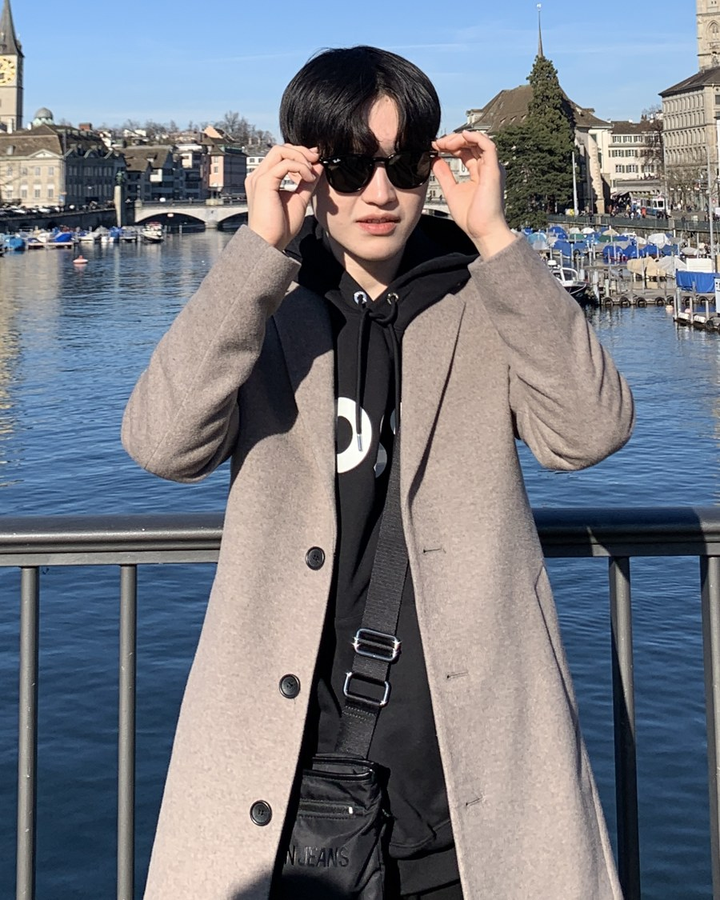

Jinho Kim
M.S. student at CIPLAB, Yonsei University
I'm an M.S. student at Yonsei University, advised by Prof. Seon Joo Kim in the Computational Intelligence & Photography Lab (CIPLAB). Before that, I completed my B.S. in Applied Artificial Intelligence at Sungkyunkwan University, where I worked as an undergraduate research assistant in the AIM Lab under Prof. Sungeun Hong.
My research began in HDR reconstruction and multi-exposure fusion, using diffusion models and implicit neural representations to recover detail a single exposure can't capture. I'm now focused on agentic image restoration — building agents that reason about and adaptively solve restoration tasks. I'm always glad to talk research or explore collaborations, so feel free to reach out.

Research interests
- Generative models for low-level vision Image restoration, HDR reconstruction
- Agentic AI and multimodal agents
- Long-form video understanding
Publications
-
RESCENE: Reframing the Glance for Long Audio-Visual Video Understanding
-
SpaDIR: Making Diagnosis Matter in All-in-One Image Restoration
-
GalleryBench: An Executable Benchmark for Multimodal Agents in Personal Photo Libraries
-
Dual-Output Multi-Exposure HDR Reconstruction via SDR Fusion and Gain Map Inverse Tone Mapping
-
LIIFusion: Coarse-to-fine Framework for Generative MEF via Implicit Neural Representation
Education
-
Yonsei University
M.S. in Artificial Intelligence
CIPLAB, advised by Prof. Seon Joo Kim. GPA 4.3/4.3
-
Sungkyunkwan University
B.S. in Applied Artificial Intelligence
GPA 4.27/4.5
Experience
-
Graduate Researcher
CIPLAB, Yonsei University
Advised by Prof. Seon Joo Kim. Research on generative models for low-level vision, currently focused on agentic image restoration.
-
Undergraduate Research Assistant
CIPLAB, Yonsei University
Advised by Prof. Seon Joo Kim. Diffusion-model study and any-size image generation.
-
Undergraduate Research Assistant
AIM Lab, Sungkyunkwan University
Advised by Prof. Sungeun Hong. MotionBERT-based 3D human pose estimation.
-
Junior–Senior Department Representative
Applied Artificial Intelligence, Sungkyunkwan University
-
Google Developer Student Club
Member, SKKU chapter
-
Scientific Society [COCO:] / [brAIn]
Study-group activities and computer-vision paper review
Honors & Awards
-
AI SeoulTech Graduate Scholarship
-
BEYOND GREEN AI For Thriving Future Pitch Competition
UNESCO Global Forum on the Ethics of AI, Round 2
-
AICOSS AI Capstone Design Hackathon
2nd Prize, Korean Association for Computer Education
-
SKKU AI-Education Hackathon
2nd Prize
-
AICOSS AI+X Industry-academic Cooperation Hackathon
3rd Prize
-
Presidential Science Scholarship
-
Trelleborg Capstone Project, THU Germany
Excellent result
-
SKKU Dean's List
4.5/4.5 GPA in 21 credits
-
SKKU Learning Fair
3rd place, Undergraduate Presidential Award